8 jobs
Greenhouse · original CV
Imported a synthetic résumé, found a current Glean listing, preserved the original file, verified the upload, and reached the visible Apply control without clicking it.
The roadmap implementation is integrated from résumé import through the final safe application checkpoint. This page is the compact, screenshot-backed handoff for product review—not a claim that a real application was submitted.
The work addressed data integrity, résumé quality, progressive discovery, durable identity, per-job CV choice, resumable user actions, application recovery, workspace transport, performance evidence, and the customer-facing handoff between those systems.
Imported a synthetic résumé, found a current Glean listing, preserved the original file, verified the upload, and reached the visible Apply control without clicking it.
Found a current Constructor listing, generated and approved a one-page grounded draft, verified the upload, and stopped at Submit Application.
Detected the account gate and created a resumable Sign in manually, then retry preparation action. Browser opening was not treated as proof of login.
Visible answer and transcript windows opened; typing, image attachment, copy, hide/reopen, resize, bounds restoration, reload persistence, and local STT readiness passed.
This last pass rebuilt the desktop app, started from isolated first-run workspaces, and exercised three synthetic candidates against current public Greenhouse, Lever, and Ashby inventories. The captures below are the accepted final states—not design mocks.
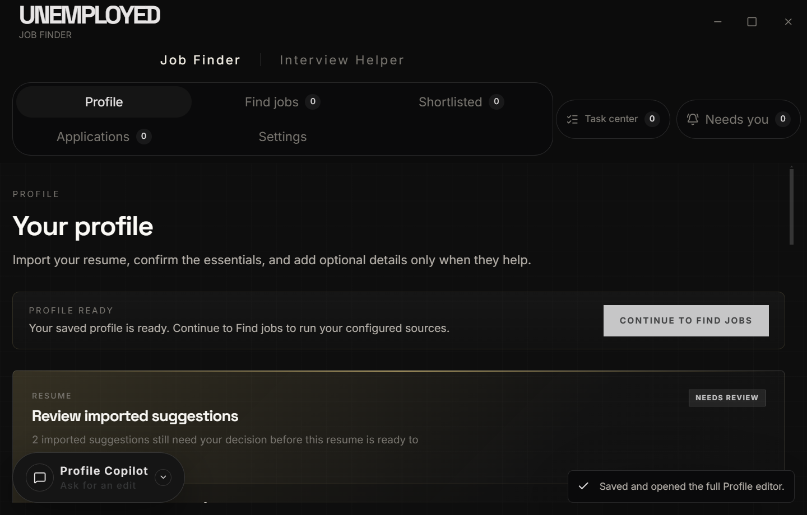
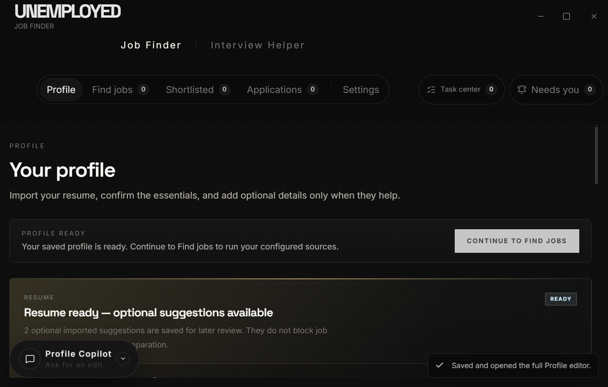
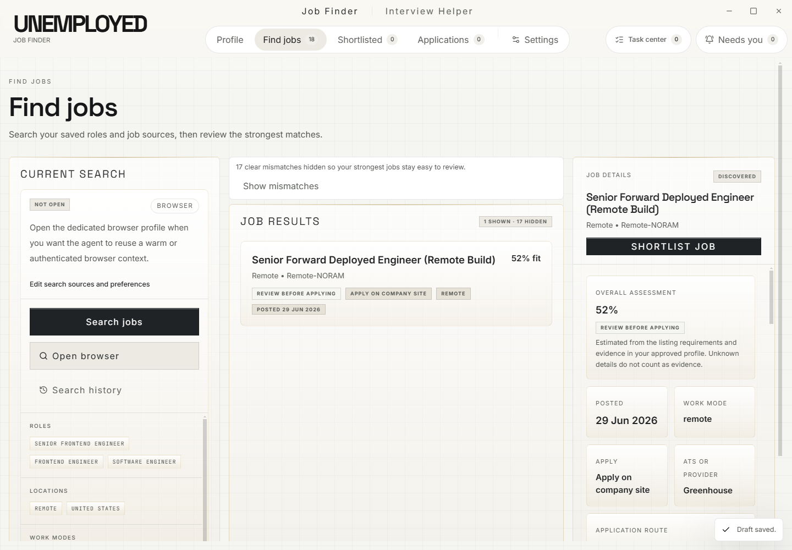
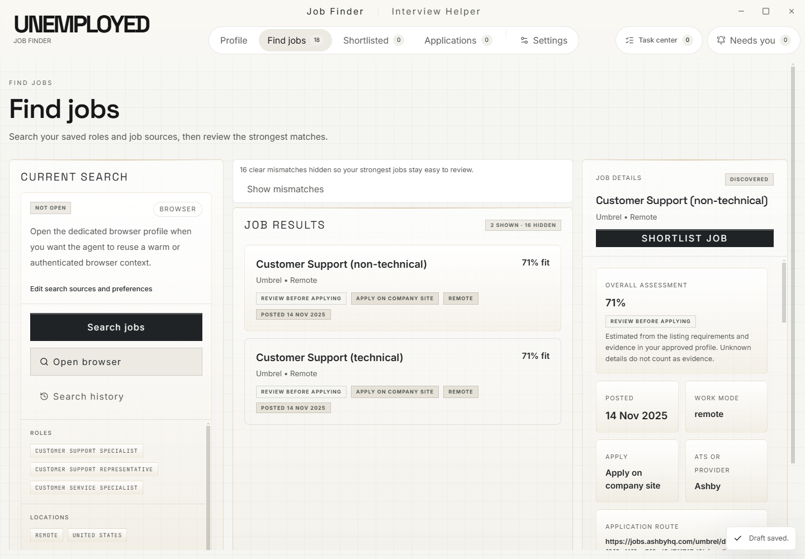
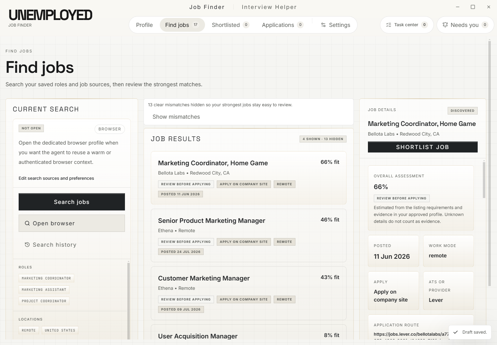
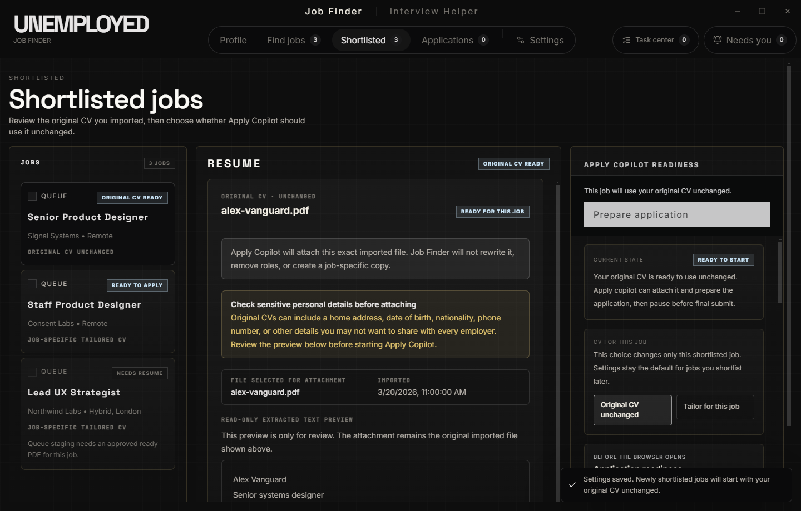
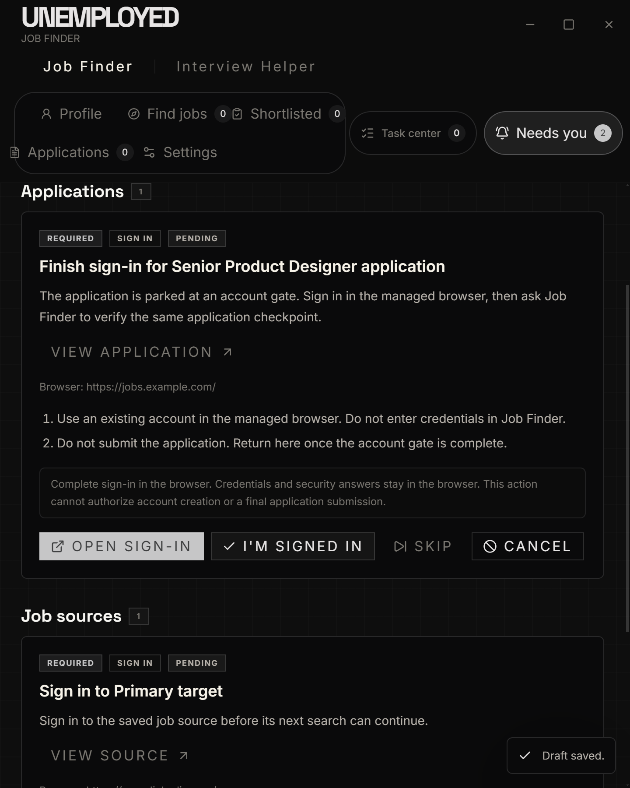
Primary actions sit before diagnostic detail, navigation reflects the real sequence, optional work is visibly optional, and every external stop says what the user—not the agent—must do next.
Native radios, named controls, focus targets, non-color status, reduced-motion branches, 900 px reflow, and native 200% zoom are covered. Personal screen-reader and reduced-motion acceptance remains user review.
These captures come from the current production Electron build in isolated workspaces. Each caption records the user-facing defect and the intended product behavior.
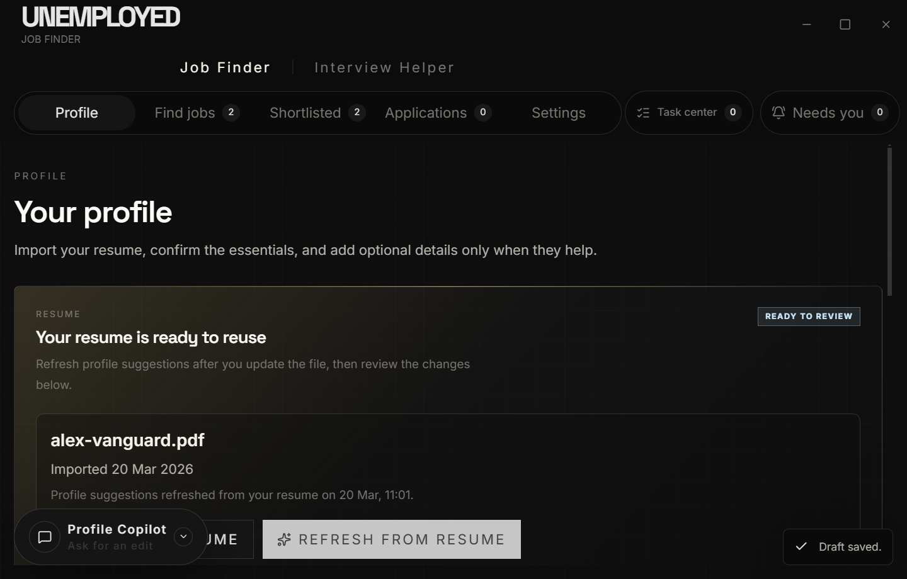
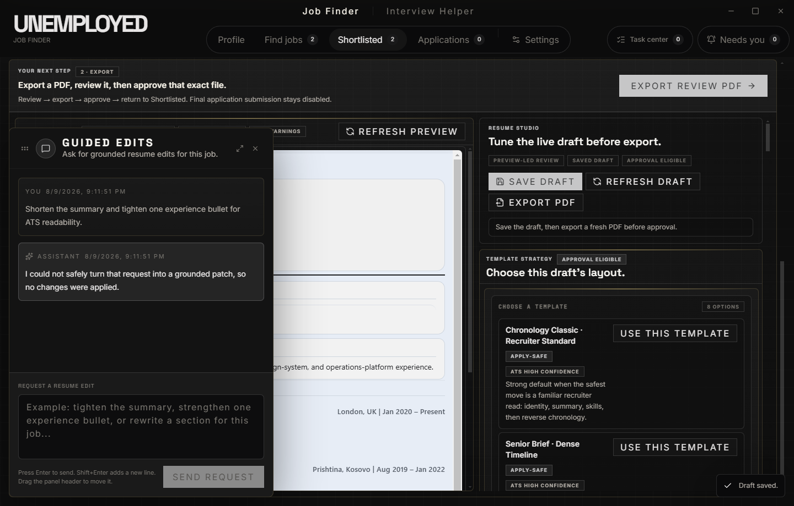
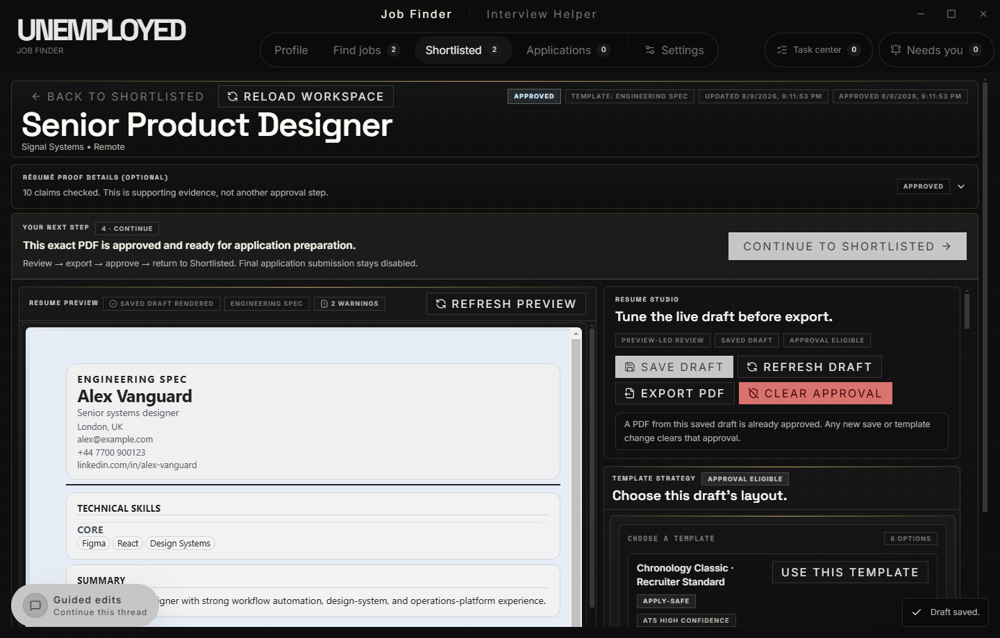
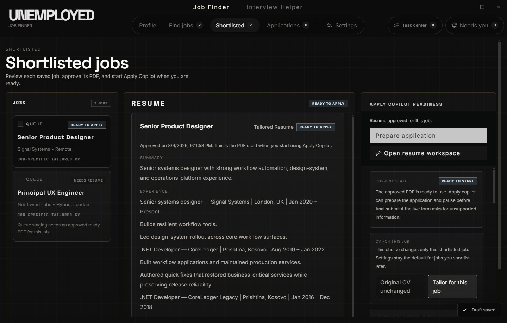
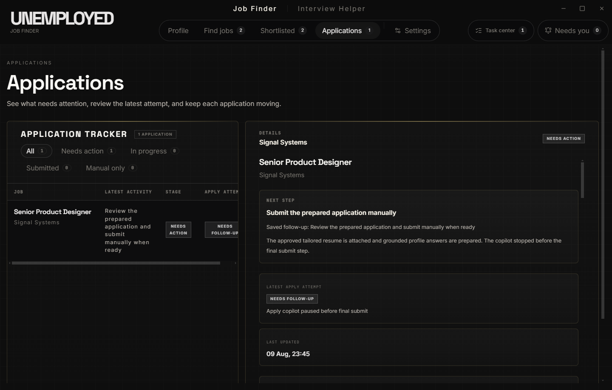
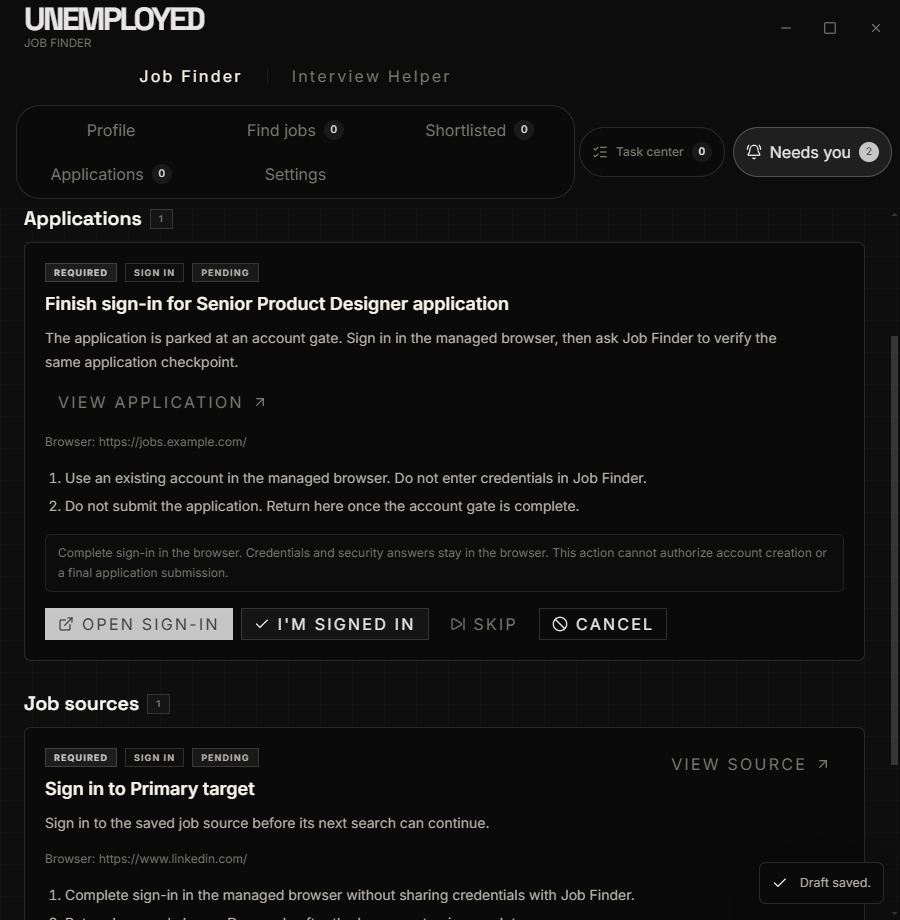
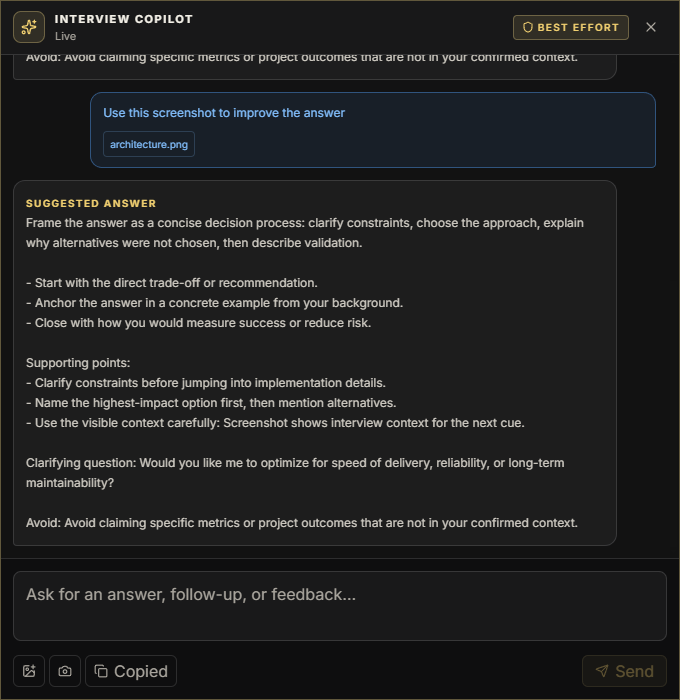
| Flow | Result | Résumé proof | Stop condition | Safety |
|---|---|---|---|---|
| Greenhouse / Glean | Passed | Original file unchanged; upload verified | Visible Apply control | Untouched; submit false |
| Ashby / Constructor | Passed | Tailored draft approved; upload verified | Visible Submit Application control | Untouched; submit false |
| Workday / AMAT | Expected handoff | Prepared asset retained | Site login required | No credentials; no inferred login |
The configured model now proposes only sparse, evidence-cited prose deltas. Deterministic code owns identity, chronology, role coverage, skills, rendering, and fallback. The comparison is synthetic and intentionally narrow.
| Provider / template | Time | Accepted / rejected rewrites | Quality gates |
|---|---|---|---|
| Luna high / technical matrix | 17.222 s | 0 / 1 | All 1.0 |
| Luna high / classic ATS | 23.126 s | 1 / 0 | All 1.0 |
| Felidae / technical matrix | 9.098 s | 0 / 5 | All 1.0 via safe fallback |
| Felidae / classic ATS | 9.821 s | 0 / 4 | All 1.0 via safe fallback |
The signed helper repeatedly failed to start with
spawn EPERM. After exhausting the bounded retry,
current visual evidence was captured from the real production
Electron app by the root-owned Playwright harness. There were no
competing app sessions or subagent GUI worktrees.
Authenticated Workday continuation was not tested because no voluntary sign-in was supplied. macOS/Linux Interview Helper capture and audio behavior require those target hosts.
Configured-provider comparisons used synthetic fixtures. This proves the integration and safety contract, not how a specific private résumé will read without human review.
The product is proven through the safe checkpoint only. A future explicit opt-in submission feature would require a separate authorization design and acceptance pass.
apps/desktop/test-artifacts/job-finder/complete-flow-current-greenhouse/prepare-only-smoke-report.json
apps/desktop/test-artifacts/job-finder/complete-flow-current-ashby-tailored-final-20260809/prepare-only-smoke-report.json
apps/desktop/test-artifacts/job-finder/complete-flow-current-workday-final-20260809/prepare-only-smoke-report.json
apps/desktop/test-artifacts/ui/job-finder-completion-20260809-final/
apps/desktop/test-artifacts/ui/action-inbox/capture-report.json
apps/desktop/test-artifacts/ui/interview-helper-basic/report.json
apps/desktop/test-artifacts/job-finder/diverse-live-audit/summary.json
apps/desktop/test-artifacts/ui/production-user-audit-20260809-final2/
apps/desktop/test-artifacts/ui/resume-workspace-luna-high/
apps/desktop/test-artifacts/ui/original-cv-flow/